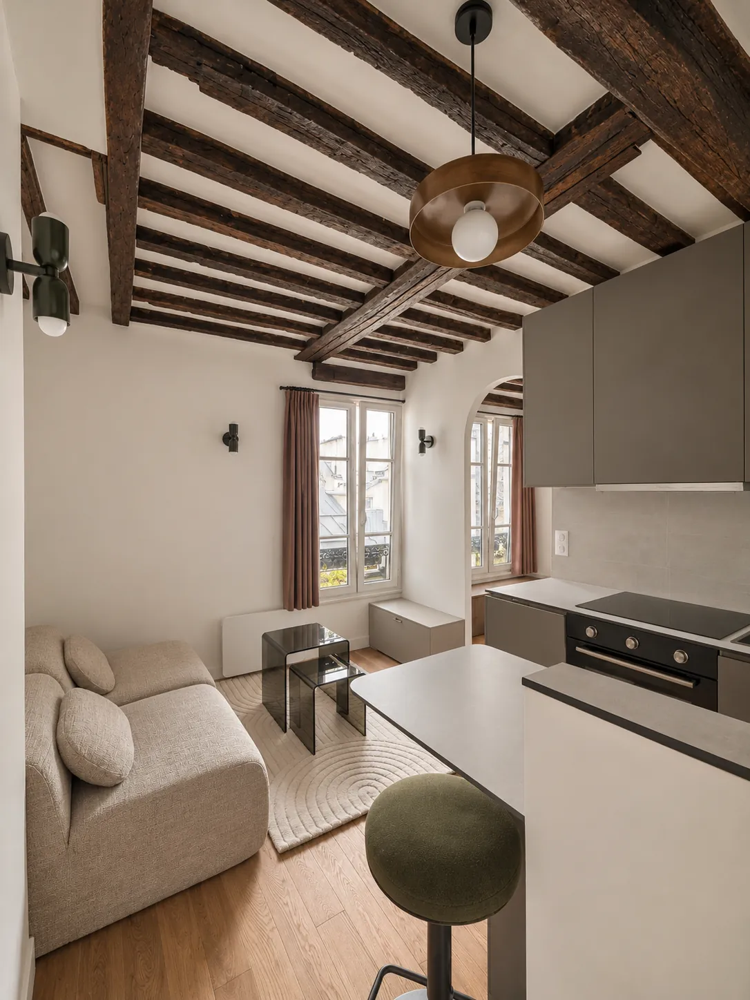
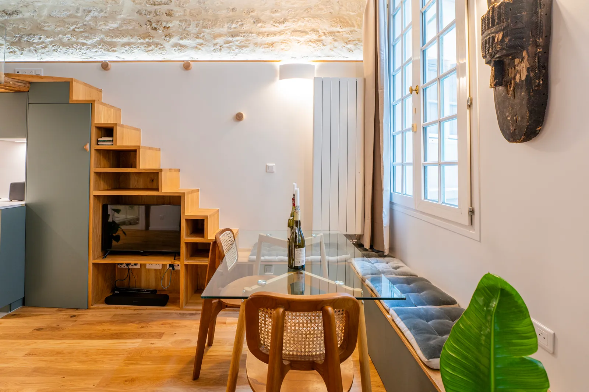

Stouls Studio / Rental investment
Paris rental investment, built for the leases that are allowed
Paris has all but closed short tourist rentals for second homes. A rental project here is designed for furnished leases of months and years. Better to know that before you buy.
What the rules allow
| Type of rental | For an apartment that is not your primary residence |
|---|---|
| Tourist rental by the night | Needs a change-of-use authorization with compensation. Renting without it is fined up to €100,000. City of Paris |
| Bail mobilité | Furnished, 1 to 10 months, not renewable, no deposit, tenant must qualify. Service-Public |
| Furnished or unfurnished long lease | Allowed. The apartment must meet the energy-rating threshold. Ministry of Ecology |
If the apartment is your primary residence, you may rent it to tourists for up to 90 days a year, and the listing must show a registration number (City of Paris). A second home owned from abroad does not qualify.
Rules as published on November 15, 2026. They have tightened several times since 2024. Check the current text, and take advice from a French lawyer or notaire before you buy on the strength of a rental plan.
The energy rating decides more than the view
Every apartment for sale in France carries an energy rating from A to G. Since January 1, 2025, an apartment rated G cannot be rented on a new or renewed lease (Ministry of Ecology). The same applies to F from 2028 and to E from 2034 (Service-Public).
Poorly rated apartments sell at a discount for that reason. Whether the rating can be raised depends on the building: windows the city will accept, insulation from the inside, the heating system, ventilation.
I give you my opinion on this at the visit. A G-rated apartment that can reach D with the work you were going to do anyway is an opportunity. One that cannot is a trap.
Rental apartments I have designed



The Odéon Studio, 26 m² (280 sq ft) in the 6th arrondissement, and the Saint-Michel Studio, 24 m² (260 sq ft) with a mezzanine: see the two rental projects.
What I build into a rental
A layout that rents
A real bedroom door, a desk that is not the dining table, storage for a tenant who arrives with a year of belongings.
Materials that last
Floors, countertops and bathroom fixtures chosen for the fifth tenant, and paint colors that can be touched up between leases.
Complete furnishing
French law lists what a furnished rental must contain. I supply that list and the things tenants look for beyond it.
A file for your manager
Plans, appliance manuals, paint references, contractor contacts and photos of every room on handover day.
Questions about renting out
Can I put my Paris apartment on Airbnb?
If it is not your primary residence, only with a change-of-use authorization from the City of Paris, which requires compensation: converting commercial space into housing elsewhere. For most individual buyers that closes the door. A primary residence can be rented to tourists for up to 90 days a year, with a registration number.
What is a bail mobilité?
A furnished lease of 1 to 10 months, not renewable, with no deposit, for tenants who qualify: students, people in training, on a job transfer or on a temporary work assignment.
Does the energy rating matter?
Yes. A G rating has ruled out any new or renewed lease since January 1, 2025. F follows in 2028 and E in 2034. Many small Paris apartments are rated F or G, so the rating belongs in the purchase decision.
Will you manage the tenants?
No. I hand the finished apartment to the property manager you choose and can introduce you to ones my clients use.